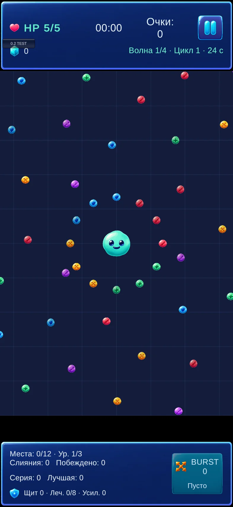

Игровой процесс из рабочей сборки
Игровой процесс из рабочей сборкиНезависимый разработчик игр
Маленькая студия.Необычные миры.
Kordius Games — студия одного разработчика. Загляните на арену «Прилипал», где нужно собирать орбиту и выживать среди волн противников.

Наши игры
Игровой процесс из рабочей сборкиОдин разработчик. Простор для экспериментов.
Kordius Games — независимая студия одного разработчика. В «Прилипалах» я работаю над движением и читаемостью боя.
Контакты